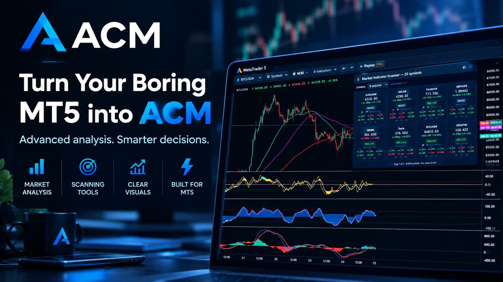
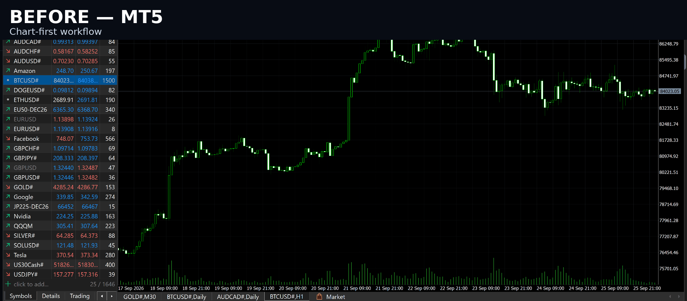
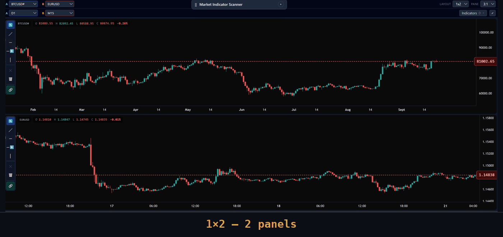
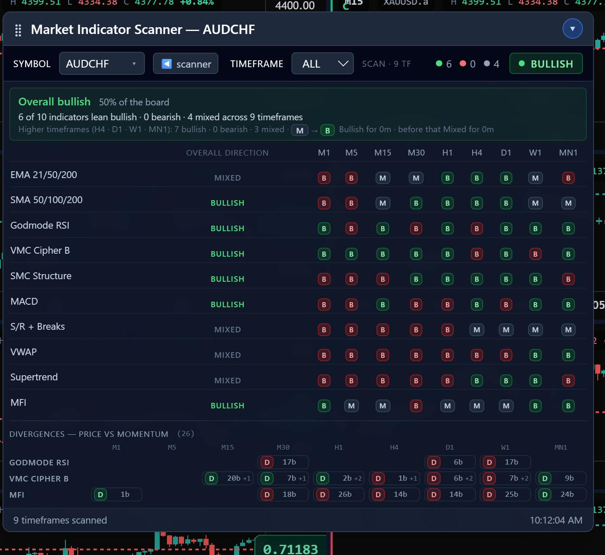
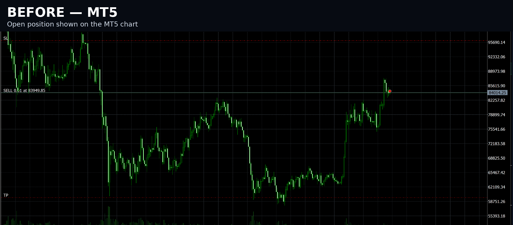

Keep the MT5 connection you already use. ACM adds the analysis, scanning and multi-timeframe workflow that MT5 leaves you to build yourself.
See the MT5 problem
Charts. Indicators. Symbols. Timeframes. They are all there — but the burden is still on you to open the right chart, check the right timeframe, and work out what deserves attention.
You can tile charts and load indicators natively — that part's fine. What's missing is anything that looks at your whole list of instruments and tells you which ones need attention. So you still open each chart yourself, on every timeframe you care about, one at a time.

MT5 makes you manage separate chart windows. ACM puts the context into one workspace: from 1×1 to 4×4, with every panel able to use its own symbol and timeframe. See the bigger picture without losing the detail.
Start with a single chart or expand to a 4×4 board. Each panel can use its own instrument and timeframe, so you can compare markets without filling your desktop with separate MT5 windows.

Most market scanners give you a colored label and leave you to trust it. ACM shows the reasoning behind every verdict, at whatever depth you want to see.
The scanner panel runs ten classic technical studies across nine timeframes, for every instrument your plan covers, and reduces it to a single verdict: bullish, bearish, or mixed.
Instead of just "bullish," ACM tells you it's been bullish for two hours and fourteen minutes, and what it was before that. Divergences — early signs a move is losing steam — are tracked across every timeframe in the same grid.

From the all-timeframe view above, drill into a single timeframe — say M30 on BTCUSD — and every one of the ten indicators explains itself in a sentence, with its own verdict. Tap any row to expand it further: the golden cross, the exact squeeze percentage, when the divergence fired.
10 indicators feed the scanner's scored Bullish/Bearish/Mixed verdict 3 are context tools available on every chart, without a directional read — all 13 available to attach manually.
Step backward through price history and replay it forward, with your indicators recalculating candle by candle — no look-ahead, no repainting. The Market Indicator Scanner is paused and hidden during replay so it can never report live figures beside a historical chart.
For example, Pro+ can replay US30 M30, XAUUSD M15, DXY D1 and EURUSD H1 simultaneously, with one shared replay clock.
Every panel can be set to candles, line, or one of the specialist styles below. Candles, line, line+markers and step line all use real time-based prices, so the scanner and indicators work on them normally. Heikin-Ashi, Renko and Kagi rebuild the chart from averaged prices or price movement instead of time — genuinely useful for reading trend structure, but display-only, so the scanner switches off automatically on those three.
Plus standard candlestick charts on every plan. All plans include all 21 timeframes: M1, M2, M3, M4, M5, M6, M10, M12, M15, M20, M30, H1, H2, H3, H4, H6, H8, H12, D1, W1 and MN1.
Open a trade in MetaTrader 5 and it shows up right alongside your charts in ACM — entry price, take-profit and stop-loss, at a glance. How many symbols' worth of open positions you can see at once depends on your plan.

One broker calls it GOLD. Another calls it XAUUSD.a. A third has its own suffix entirely. ACM finds whichever MetaTrader 5 terminal is running and works out the right name at your broker automatically.
Same instrument, three different brokers:
GOLDXAUUSD.aXAUUSD#all resolve to Gold — tracked
The same copy of ACM works on a Dukascopy, an XM, or any other MT5 broker's demo or live account, with no configuration — because it reads the connection from whichever terminal is actually running on your machine, not a fixed install path.
Every plan connects to any instrument available through your MetaTrader 5 broker. All launch plans are one-time perpetual licenses.
Try the full Pro feature set for 7 days. Your trial starts when you first activate ACM, has no recurring charge, and expires after 7 days. You may purchase any ACM plan after the trial expires.
Perpetual licenses are one-time purchases with no recurring payment. ACM requires MetaTrader 5 for its live market-data workflow.
ACM is a Windows desktop application. MetaTrader 5 must be installed and logged in to your broker for the live market-data workflow. ACM does not need your broker password separately and does not place trades.
Email my.acmsupport@gmail.com for installation, licensing or product questions.
Seven days of full Pro access for $9.99. No recurring charge. The trial expires after 7 days from first activation, and you may purchase any ACM plan afterward.
Start the trial